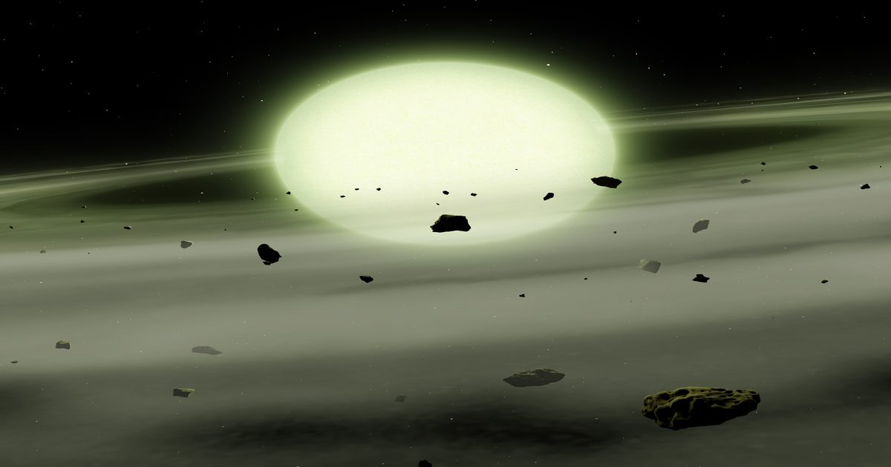

«Это похоже на научную фантастику»: астрономы нашли первую зеленую звезду
Вселенная только что стала немного красочнее Сообщение «It Feels Like Something Out of Science Fiction»: Astronomers Find First Green Star впервые появилось на Nautilus.